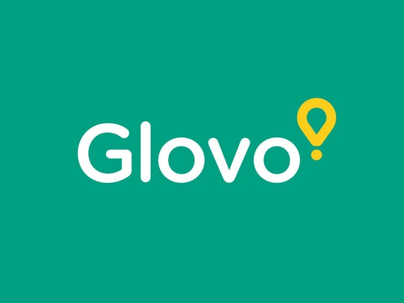

In this project we used SQL to identify Customers purchacing power across product categories. Wrote SQL to aggregate sales, segment customers based onspending behaviour and uncover insights that could support inventory planning and customer targeting.
Data exploration of Wholesale customer analysis dataset in SQL server.
This project analyze customers churn data from MTN to understand why customers leave and which customers segmennt are most affected. The dashboard presents key performance indicators and interactive visualization that help decision makers identify churn trends and develop targeted retention strategies.

An end-to-end data analytic project where SQL was used to analyze Glovo order data and answer key business questions, While Excel dashboards transformed the results into interractive visualizations for business decision makings.